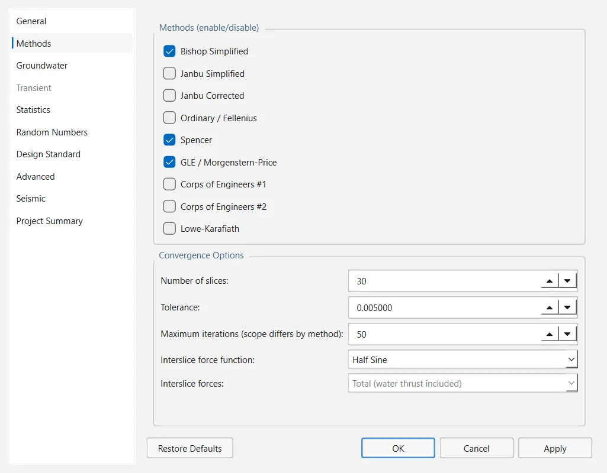

El cuadro de diálogo Project Settings reúne las opciones que afectan a todo el análisis: unidades y dirección de rotura, métodos de dovelas y su convergencia, método de agua subterránea, análisis estadísticos y sísmicos, coeficientes parciales y algunos controles numéricos. Los ajustes se guardan en el archivo del proyecto, de modo que cada proyecto conserva los suyos.
2.1.1Apertura del diálogo#
Elige Analysis → Project Settings… (Ctrl+J) o el botón de la barra de herramientas. Las páginas aparecen en una lista a la izquierda (General, Methods, Groundwater, Transient, Statistics, Random Numbers, Design Standard, Advanced, Seismic y Project Summary) y los botones de la parte inferior actúan sobre todas a la vez:
- OK aplica todas las páginas y cierra el diálogo; Apply las aplica y lo deja abierto; Cancel lo cierra sin aplicar lo que aún no se haya aplicado.
- Restore Defaults devuelve todos los ajustes del proyecto a su valor por defecto.
Los ajustes de la búsqueda de superficies de rotura (tipo de superficie, método de búsqueda, rejilla, filtros y optimización) no están en este diálogo, sino en Surfaces → Surface Options… (Sección 2.7).
Restore Defaults surte efecto de inmediato, antes de pulsar OK, y Cancel no lo deshace. Además restablece ajustes que están fuera de este diálogo: toda la configuración de Surface Options, los límites del talud y el eje de momentos también vuelven a sus valores por defecto.

2.1.2General#
| Campo | Significado | Por defecto | Intervalo u opciones |
|---|---|---|---|
| Units | Sistema de unidades con el que se muestran y se introducen los datos (Sistemas de unidades). La línea que hay bajo la lista resume sus unidades. | Metric, stress as kPa | Seis sistemas |
| Time Units | Unidad de tiempo | d | s, min, h, d, mo, yr |
| Permeability Units | Unidad de conductividad hidráulica | m/s | m/s, m/day, m/year, cm/s, mm/hour |
| Failure Direction | Sentido en que se mueve la masa deslizante (Dirección de rotura) | Right to Left | Right to Left, Left to Right |
| Max Materials | Número máximo de materiales que puede contener el proyecto | 20 | 1 a 500 |
| Max Supports | Número máximo de soportes | 20 | 0 a 500 |
El límite de Max Materials se exige al importar propiedades de otro proyecto y en las interfaces de scripts y de agentes, pero no en el diálogo Define Materials, donde se pueden añadir materiales por encima de él. Max Supports se guarda, pero no se exige en ningún sitio.
Sistemas de unidades#
OGR Slip2D calcula y guarda todos los valores en el sistema SI de la segunda fila de la Tabla 2.1.2 (m, kN, kPa, kN/m³). Elegir otro sistema no cambia el modelo: los valores se convierten al mostrarlos y se convierten de nuevo al introducirlos.
| Sistema | Longitud, fuerza, fuerza por unidad de longitud, tensión, peso específico |
|---|---|
| Metric, stress as MPa | m, MN, MN/m, MPa, MN/m³ |
| Metric, stress as kPa | m, kN, kN/m, kPa, kN/m³ |
| Metric, stress as tonnes/m² | m, tonnes, tonnes/m, tonnes/m², tonnes/m³ |
| Imperial, stress as tons/ft² | ft, toneladas cortas (2000 lbs), tons/ft, tons/ft², tons/ft³ |
| Imperial, stress as ksf | ft, kips, kips/ft, ksf, kips/ft³ |
| Imperial, stress as psf | ft, lbs, lbs/ft, psf, lbs/ft³ |
El sistema de unidades solo afecta al diálogo Define Materials (pesos específicos, parámetros de resistencia, presión intersticial constante y valor de entrada de aire) y al desplazamiento de Newmark que muestra la ventana Interpret. Las coordenadas, las cargas, los soportes, la rejilla de presiones de agua y los demás campos de este diálogo se introducen y se muestran siempre en metros, kN y kPa, sea cual sea el sistema elegido. Con el sistema por defecto no hay ninguna diferencia.
Dirección de rotura#
Las ecuaciones de todos los métodos están planteadas para una masa que desliza en un sentido conocido (Sección 3.1.5). La página muestra un pequeño croquis del talud con una flecha que indica la opción elegida:
- Right to Left (la opción por defecto): la masa deslizante se mueve hacia decrecientes; la coronación queda a la derecha y el pie a la izquierda.
- Left to Right: la masa se mueve hacia crecientes; la coronación queda a la izquierda y el pie a la derecha.
Ajústala antes de calcular si el terreno del modelo desciende hacia la derecha. La dirección también determina el sentido en que actúan la fuerza sísmica horizontal y las fuerzas de los soportes.
2.1.3Métodos#
El grupo superior, Methods (enable/disable), tiene una casilla por cada método de dovelas: Bishop Simplified, Janbu Simplified, Janbu Corrected, Ordinary / Fellenius, Spencer, GLE / Morgenstern-Price, Corps of Engineers #1, Corps of Engineers #2 y Lowe-Karafiath. Un proyecto nuevo tiene activados Bishop Simplified y Janbu Simplified. Cada método activado ejecuta su propia búsqueda y, por tanto, tiene su propia superficie crítica; si no hay ninguno activado, Compute ejecuta Bishop Simplified. Los métodos se describen en la Sección 3.2.
| Campo | Significado | Por defecto | Intervalo u opciones |
|---|---|---|---|
| Number of slices | Dovelas en que se divide cada superficie de prueba | 25 | 3 a 500 |
| Tolerance | Tolerancia de convergencia del factor de seguridad | 0.005 | 10⁻⁶ a 1 |
| Maximum iterations (scope differs by method) | Límite de iteraciones; lo que se acota depende del método (véase más abajo) | 50 | 1 a 500 |
| Interslice force function | Forma de en GLE / Morgenstern-Price; solo se activa si se marca ese método. varía de 0, en el extremo izquierdo de la superficie, a 1, en el derecho. | Half Sine | Half Sine, Constant, Trapezoidal, Clipped Sine |
| Interslice forces | Indica si la resultante entre dovelas, cuya inclinación prefijan Lowe-Karafiath y Corps of Engineers #1 y #2, es la fuerza total o la fuerza efectiva con el empuje del agua aplicado por separado; solo se activa si se marca alguno de esos tres métodos | Total (water thrust included) | Effective (water thrust separated), Total (water thrust included) |
El mismo parámetro Maximum iterations limita un bucle distinto según la familia de métodos:
- Bishop Simplified, Janbu Simplified y Janbu Corrected: la iteración sobre el factor de seguridad, con el valor exacto que se haya fijado.
- Lowe-Karafiath y Corps of Engineers #1 y #2: la misma iteración, pero si el valor es inferior a 60, se sube a 60.
- Ordinary / Fellenius: ninguno, porque el método no itera.
- Spencer y GLE / Morgenstern-Price: la búsqueda de la inclinación entre dovelas; con un valor superior a 400, limita además la iteración interna que se resuelve en cada paso de esa búsqueda, que de otro modo mantiene sus 400 pasadas.
Con Constant como función de fuerzas entre dovelas, GLE / Morgenstern-Price equivale a Spencer. Total es la convención con la que se publican los valores de los tres métodos de inclinación prefijada; Effective es la opción adecuada para un talud con agua por encima del terreno, donde la hipótesis de fuerzas totales hace que el factor de seguridad dependa de la profundidad del agua (Sección 3.3).
2.1.4Agua subterránea#
El grupo Basic establece cómo se obtienen las presiones intersticiales; el grupo Advanced activa uno de los tres análisis que las modifican. La Sección 2.4 explica cómo se usa cada método y cómo toman de él los materiales su presión intersticial.
| Campo | Significado | Por defecto | Intervalo u opciones |
|---|---|---|---|
| Method | Origen de las presiones intersticiales: ninguno, superficies de agua (water_table, piezo_line), el coeficiente (ru), una rejilla de presiones de agua dada como altura total, altura de presión o presión intersticial, o un análisis de filtración por elementos finitos, en régimen estacionario o transitorio | water_table | none, water_table, piezo_line, ru, grid_total_head, grid_pressure_head, grid_pore_pressure, fea_steady, fea_transient |
| Pore Fluid Unit Weight | Peso específico del agua, | 9.81 kN/m³ | 0.1 a 50 kN/m³ |
| Default Hu | Coeficiente que se aplica a la distancia vertical bajo una superficie de agua, para los materiales que no definen uno propio | 1.0 | 0 a 1 |
| Auto Hu (compute from water-surface slope) | a partir de la inclinación de la superficie de agua, para todos los materiales | desactivado | — |
| Negative pore pressure cutoff / Cutoff value | Límite superior de la succión matricial que se usa en la resistencia al corte de los materiales con parámetros no saturados | desactivado / 100 kPa | 0 a 10⁶ kPa |
| Advanced | Una opción como máximo: None, Transient groundwater, Calculate Excess Pore Pressure (B-bar method) o Rapid Drawdown analysis | None | Mutuamente excluyentes |
| Drawdown method | Procedimiento del análisis de desembalse rápido; solo se activa con esa opción | Effective Stress using B-bar | Effective Stress using B-bar; Duncan, Wright, Wong 3 Stage (1990); Army Corp. Eng. 2 Stage (1970); Lowe and Karafiath (1960) |
Las tres opciones avanzadas no se pueden combinar, y por eso son botones de opción. Rapid Drawdown analysis activa Boundaries → Add Drawdown Line y Groundwater → Drawdown Level Sweep…. Los cuatro procedimientos de desembalse rápido necesitan que el método de agua subterránea sea water_table o piezo_line y que haya al menos un material marcado con comportamiento sin drenaje; si no se cumple, el análisis no se ejecuta (Sección 3.8). Transient groundwater activa la página Transient y Groundwater → Transient Groundwater….
2.1.5Régimen transitorio#
Opciones del motor de cálculo del análisis de filtración transitoria por etapas. La página aparece en gris hasta que se elige Transient groundwater en la página Groundwater y se aplica el cambio; los tiempos de las etapas y las marcas Calculate SF de cada etapa se editan en Groundwater → Transient Groundwater… (Sección 2.9).
| Campo | Significado | Por defecto | Intervalo |
|---|---|---|---|
| Transient groundwater | Solo lectura: On, u Off con una indicación que remite a la página Groundwater | Off | — |
| Stages defined | Solo lectura: número de etapas y cuántas de ellas calculan un factor de seguridad | 0 | — |
| Tolerance | Tolerancia de convergencia del cálculo transitorio | 10⁻⁵ | 10⁻⁹ a 1 |
| Maximum iterations | Iteraciones por paso de tiempo | 30 | 1 a 1000 |
| Number of time steps | Pasos de tiempo por etapa; Auto lo deduce del tamaño de los elementos y del almacenamiento, de modo que el frente de agua atraviese aproximadamente un elemento por paso | Auto | Auto, 1 a 100 000 |
2.1.6Estadística#
Esta página activa los análisis probabilístico y de sensibilidad que ejecuta Statistics → Compute Statistics. Las variables aleatorias propiamente dichas se definen en Statistics → Random Variables…; los análisis y las variables se describen en la Sección 2.10.
| Campo | Significado | Por defecto | Intervalo u opciones |
|---|---|---|---|
| Probabilistic analysis | Muestrea las variables aleatorias y calcula la distribución del factor de seguridad | desactivado | — |
| Sensitivity analysis | Barre cada variable aleatoria a lo largo de su intervalo de variación | desactivado | — |
| Analysis type | Global Minimum reevalúa la superficie crítica determinista en cada muestra; Overall Slope repite la búsqueda completa en cada muestra, lo que resulta mucho más lento | Global Minimum | Global Minimum, Overall Slope |
| Sampling method | Cómo se generan las muestras | Monte Carlo | Monte Carlo, Latin Hypercube |
| Number of samples | Número de muestras del análisis probabilístico | 1000 | 1 a 1 000 000 |
| Sensitivity intervals | Tramos iguales en que se divide el intervalo de variación de cada variable para el barrido de sensibilidad | 50 | 2 a 500 |
Los comandos del menú Statistics siguen en gris hasta que se marca aquí alguno de los dos análisis.
2.1.7Números aleatorios#
| Campo | Significado | Por defecto | Intervalo u opciones |
|---|---|---|---|
| Generation | Pseudo-random es reproducible: con la misma semilla se obtiene el mismo resultado. Random toma la semilla del reloj, de modo que cada ejecución da un resultado distinto. | Pseudo-random | Pseudo-random, Random |
| Seed | Semilla de la secuencia pseudoaleatoria; el campo se desactiva con Random | 10116 | 0 a 2 147 483 647 |
| Share one Latin Hypercube stratification across variables | La muestra cae en el mismo estrato de todas las variables, de modo que estas varían juntas; no afecta a Monte Carlo | desactivado | — |
La semilla interviene en los análisis probabilístico y de sensibilidad y en las búsquedas que generan superficies al azar (Slope, Block, Path y Simulated Annealing). Grid Search y Auto Refine enumeran sus superficies, así que en ellas no interviene el azar. Para los resultados que vayan a un informe, conviene dejar el generador pseudoaleatorio, porque así se pueden reproducir exactamente.
2.1.8Norma de diseño#
Los coeficientes parciales vienen desactivados por defecto: activarlos cambia todos los factores de seguridad que ha dado el modelo hasta ese momento, así que es una decisión que hay que tomar de forma explícita. Cuando se aplican, el análisis trabaja con una copia del modelo con los coeficientes ya aplicados (el proyecto en sí no se modifica) y el valor que obtiene es un factor de sobredimensionamiento, que debe superar 1, y no un factor de seguridad. La barra de estado, el panel Results y las notas del análisis lo indican. El procedimiento se explica en la Sección 2.11 y en la Sección 3.12.
| Campo | Significado | Por defecto | Intervalo u opciones |
|---|---|---|---|
| Apply partial factors | Activa la norma de diseño | desactivado | — |
| Design standard | Carga un conjunto de coeficientes; se activa cuando está marcada la casilla anterior | None | None; Eurocode 7 — DA1 Combination 1; Eurocode 7 — DA1 Combination 2; Eurocode 7 — DA2; Eurocode 7 — DA3; Custom |
| Permanent actions, Variable actions | Coeficientes que multiplican las acciones | 1.0 | 0.1 a 10 |
| Cohesion, tan(friction angle), Undrained strength cu, Shear strength (other models) | Coeficientes que dividen la resistencia, según la categoría del modelo de resistencia | 1.0 | 0.1 a 10 |
| Unit weight | Coeficiente que multiplica los pesos específicos | 1.0 | 0.1 a 10 |
| Resistance | Coeficiente que divide la resistencia total | 1.0 | 0.1 a 10 |
Al elegir una norma se cargan sus coeficientes (Tabla 2.1.9); los campos de los coeficientes solo se pueden editar con Custom.
| Norma | γG | γQ | γc′ | γφ′ | γcu | γτ | γγ | γR |
|---|---|---|---|---|---|---|---|---|
| DA1 Combination 1 | 1.35 | 1.5 | 1.0 | 1.0 | 1.0 | 1.0 | 1.0 | 1.0 |
| DA1 Combination 2 | 1.0 | 1.3 | 1.25 | 1.25 | 1.4 | 1.25 | 1.0 | 1.0 |
| DA2 | 1.35 | 1.5 | 1.0 | 1.0 | 1.0 | 1.0 | 1.0 | 1.1 |
| DA3 | 1.35 | 1.5 | 1.25 | 1.25 | 1.4 | 1.25 | 1.0 | 1.0 |
El coeficiente de las acciones permanentes no se aplica: el peso del terreno no lleva coeficiente de acción, todas las cargas distribuidas y lineales se multiplican por el coeficiente de las acciones variables y las notas del análisis lo advierten cuando el coeficiente de las acciones permanentes es distinto de 1. Para DA3 se cargan los coeficientes de acción del conjunto A1 (1.35 y 1.5), cuando en un talud con DA3 corresponde el conjunto A2 (1.0 y 1.3). El coeficiente Shear strength (other models) no es un coeficiente de la EN 1997-1: OGR Slip2D le da el mismo valor que al coeficiente de tan φ′ del mismo conjunto.
2.1.9Opciones avanzadas#
Controles numéricos y de admisibilidad del cálculo de equilibrio límite. Los valores por defecto sirven para la mayoría de los modelos.
| Campo | Significado | Por defecto | Intervalo |
|---|---|---|---|
| Tensile stress check / Percentage of slices | Rechaza una superficie con tracción en la base de una dovela; la comprobación se hace una vez que el factor de seguridad ha convergido y abarca un porcentaje de las dovelas, contadas desde el pie | desactivado / 95 % | 1 a 100 % |
| Use enhanced particle swarm algorithm | Al final de cada iteración de la búsqueda Particle Swarm, las partículas con los factores más altos se vuelven a dispersar | activado | — |
| Accelerate convergence (Steffensen, scope differs by method) | Extrapolación de Aitken de la iteración sobre el factor de seguridad. La usan Bishop Simplified en superficies circulares y los dos métodos de Janbu; los demás métodos no la utilizan. | activado | — |
| Search surfaces in parallel / Processors to use | Reparte las superficies de una búsqueda entre varios procesos; el resultado es idéntico, solo cambia el tiempo. La línea inferior indica a cuántos procesos equivale el porcentaje en este ordenador (8 como máximo). | activado / 50 % | 1 a 100 % |
| Initial factor of safety | Primer valor de tanteo de la iteración: un punto de partida, no una cota inferior | 1.0 | 0.001 a 100 |
| Minimum lambda, Maximum lambda | Intervalo en el que se busca el factor de escala entre dovelas de Spencer y GLE / Morgenstern-Price | −0.1, 6.0 | −10 a 10 |
| Maximum base angle on weak-layer clips | Inclinación máxima de la base de una dovela en una superficie recortada por una capa débil; con 90° se desactiva | 80° | 1 a 90° |
| Check m-alpha < 0.2 | Rechaza las superficies en las que es menor que 0.2 (Whitman y Bailey, 1967); se aplica a Bishop Simplified, a los dos métodos de Janbu, a Spencer y a GLE / Morgenstern-Price | activado | — |
Las superficies que no superan la comprobación de m-alpha conservan su factor de seguridad y permanecen en los resultados; lo único que se les impide es ser la superficie crítica. En un suelo puramente cohesivo, la comprobación equivale a limitar a 78.5° la inclinación de la base de la dovela, un límite más estricto que los 80° que se aplican por defecto en las capas débiles. Estrechar el intervalo de lambda por debajo de 1.5 puede dejar fuera la solución: el círculo de validación con el que se contrasta el programa necesita (Sección 3.3).
2.1.10Análisis sísmico#
Resultados que ofrece un cálculo sísmico además del factor de seguridad. Los coeficientes sísmicos propiamente dichos se fijan en Loading → Seismic Load… y los registros de aceleración en Loading → Seismic Records… (Sección 2.5.4).
| Campo | Significado | Por defecto | Intervalo u opciones |
|---|---|---|---|
| Critical acceleration: Compute Ky for all surfaces | Para cada superficie, el coeficiente sísmico horizontal que la lleva al factor de seguridad objetivo; las superficies se ordenan según este valor | desactivado | — |
| Target factor of safety | Factor de seguridad que define ; se activa con cualquiera de los dos análisis | 1.0 | 0.001 a 100 |
| Permanent displacement: Newmark displacements | Desplazamiento de un bloque rígido deslizante, obtenido por integración del registro por encima de | desactivado | — |
| Seismic record | Registro que se integra; aparece en la lista con su aceleración máxima y su duración | (none) | Registros del proyecto |
| Displacements computed using | Polaridad del registro | Maximum of both polarities | Maximum of both polarities, Direct polarity, Inverse polarity, Average of both polarities |
| Direction: Allow upslope displacement | Desactivado: la resistencia al movimiento pendiente arriba se toma como infinita y el bloque solo se mueve pendiente abajo | desactivado | — |
| Scale record by a factor of | Multiplica las aceleraciones del registro; con 1 se usa tal como se registró | 1.0 | 0.0001 a 1000 |
Con cualquiera de los dos análisis activado, la superficie crítica que se muestra es la de menor , que en general no coincide con la de menor factor de seguridad. Un cálculo de Newmark necesita un registro: si está seleccionado (none), el cálculo lo indica en lugar de dar un desplazamiento. Los campos de registro, polaridad, dirección y escala solo se activan con la casilla Newmark displacements marcada (Sección 3.9).
2.1.11Resumen del proyecto#
| Campo | Se usa en | Por defecto |
|---|---|---|
| Project Title | Título del informe PDF | Untitled Project |
| Author | Informe PDF y Analysis → Info Viewer | ya rellenado |
| Company | Informe PDF | ya rellenado |
| Analysis | Descripción libre del análisis | vacío |
| Comments | Texto libre, un comentario por línea; las líneas en blanco se descartan | vacío |
En la versión 0.1.235, los campos Author y Company de un proyecto nuevo vienen ya rellenados con el nombre y la institución del autor del programa. Sustitúyelos por los tuyos antes de generar un informe con File → Generate Report… (Sección 2.12).
Todos los campos del diálogo se guardan en el bloque settings del archivo .ogr (Sección 5.4), de modo que al reabrir un proyecto se recupera la configuración con la que se analizó. Los ajustes de la búsqueda de superficies van en el mismo bloque, bajo search.